Cyberstar
A management dashboard for DoD agencies tracking cybersecurity workforce qualifications — redesigned end to end, against a six-developer team.
The DCWF 8140 directive requires DoD agencies to map every cybersecurity role to a work role category, ensure personnel hold the required certifications, and maintain continuous compliance records. Compliance team leaders run that day to day, and the dashboard was where they were supposed to do it.
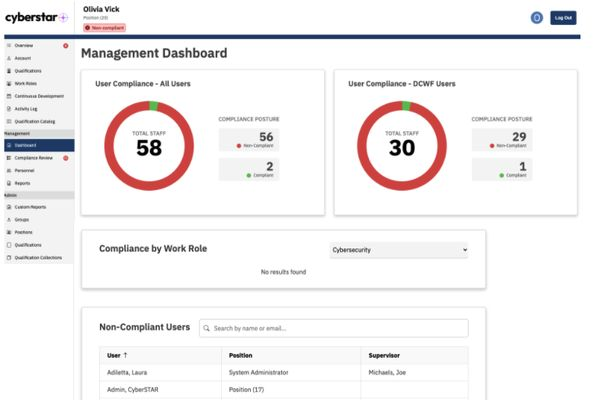
I ran a feedback exercise directly on the live dashboard with compliance leaders, annotating their reactions in place.
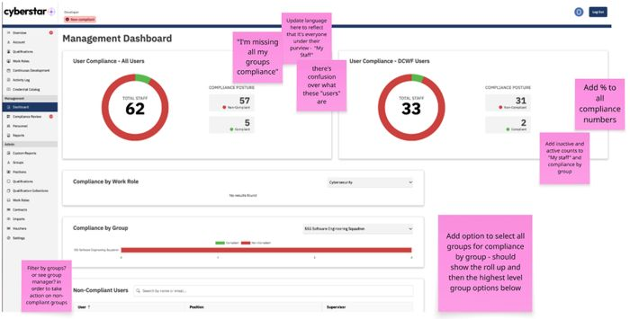
Managers could see that something was wrong, but couldn't identify who was non-compliant or act without leaving the dashboard entirely.
THE GAP SCALED WITH AGENCY SIZE — THE LARGER THE ORG, THE MORE PAINFULCyberstar runs a six-person engineering team. Every design decision was weighed against implementation cost, which meant maximizing user value while minimizing net-new development. Working with engineering, I found opportunities to reuse existing backend infrastructure — including the filtering and data capabilities already powering the reports page — rather than building from scratch.
Round one triangulated the problem from four directions: interviews with compliance team leaders across multiple agencies, support ticket and complaint analysis, usage analytics, and contextual inquiry watching real compliance reviews.
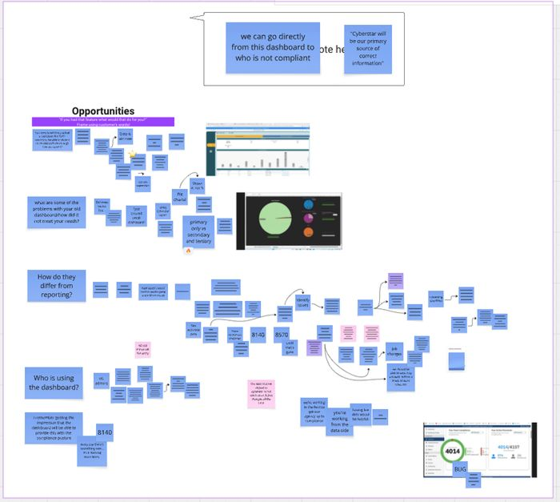
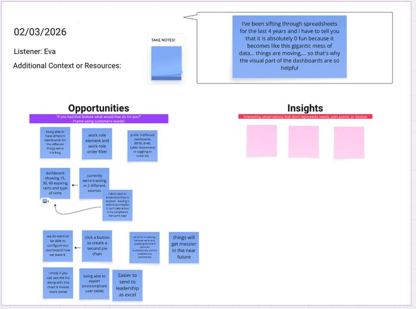
I've been sifting through spreadsheets for the last 4 years and it is absolutely 0 fun, because it becomes this gigantic mess of data. That's why the visual part of the dashboards is so helpful.DTRA COMPLIANCE LEAD, 02/03/26
I don't want to know once they're expired — viewing it after is less helpful, I can't take action to fix compliance the same way.ON PROACTIVE VS REACTIVE REPORTING
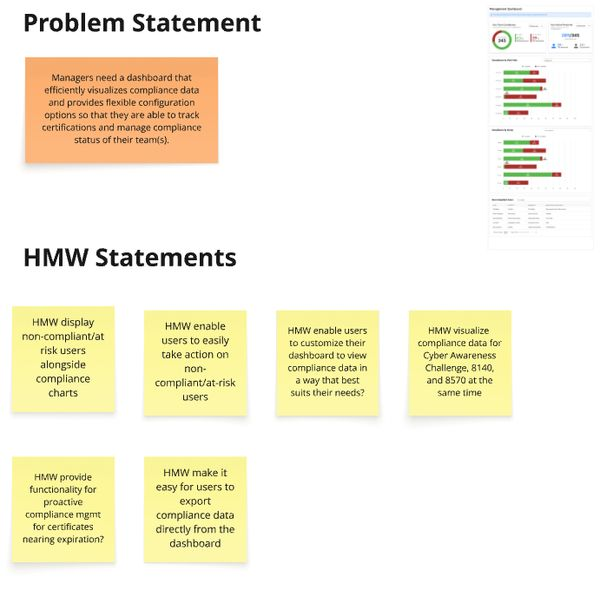
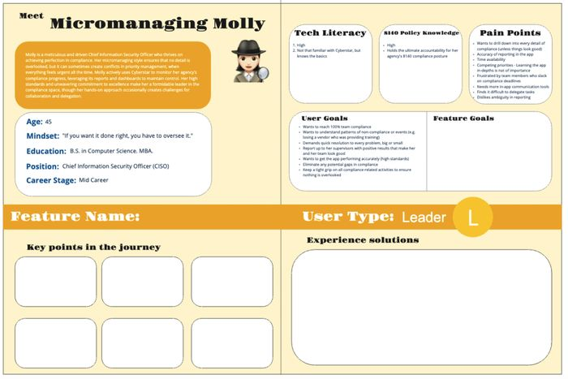
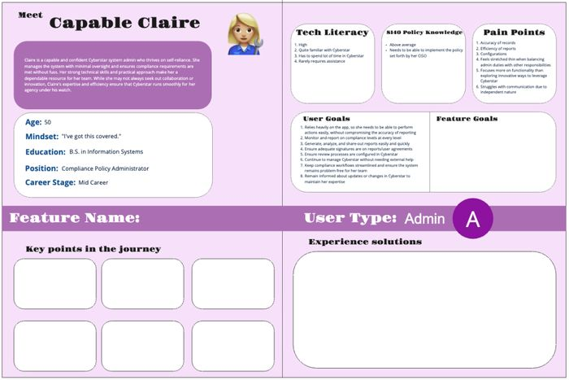
Identify who is non-compliant, understand why, and take or delegate action — all without leaving the dashboard.
THE CORE JOB. THE EXISTING PRODUCT BROKE THIS LOOP AT EVERY STEPI facilitated a design studio workshop with the product trio, the CEO, and customer success. Four steps: ideation, scope and prioritization, assumption identification, and assumption prioritization.
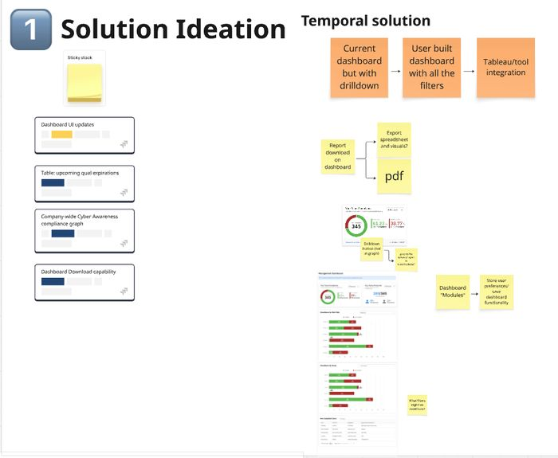
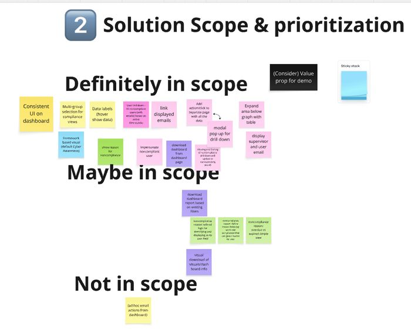
Confirmed as definitely in scope: consistent UI across the dashboard, multi-group selection, drill-down to non-compliant users with email visibility, a modal for drill-down detail, framework-based visuals defaulting to Cyber Awareness, reason for non-compliance, filtering and sorting of the drill-down list, supervisor and user email, and download from the dashboard page.
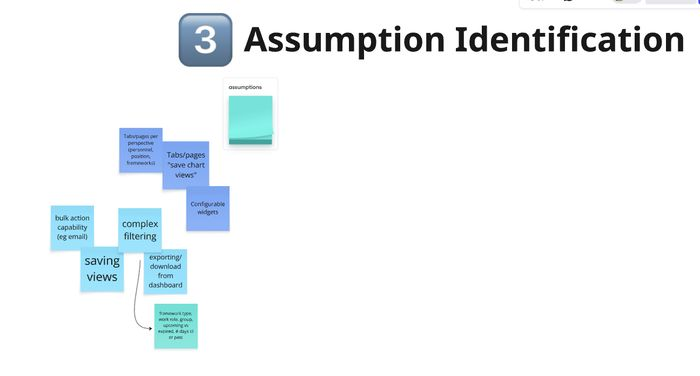
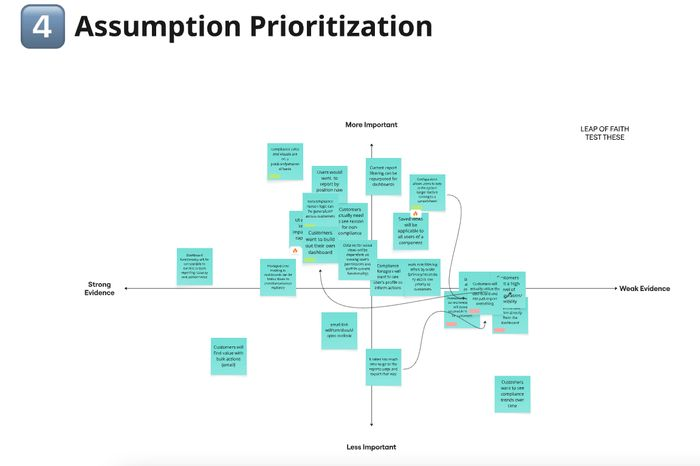
The prioritization matrix is what made round two focused. Whether customers would actually use configuration features, and whether saved views would apply broadly, were the assumptions carrying the most risk — so those were the ones taken back to real users before any high-fidelity work.
Each participant sketched alone before any group discussion. Counting how many sketches independently arrived at the same idea turns a workshop into evidence.
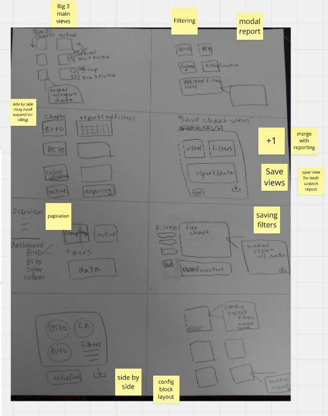
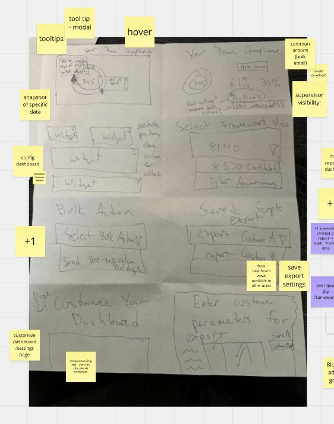
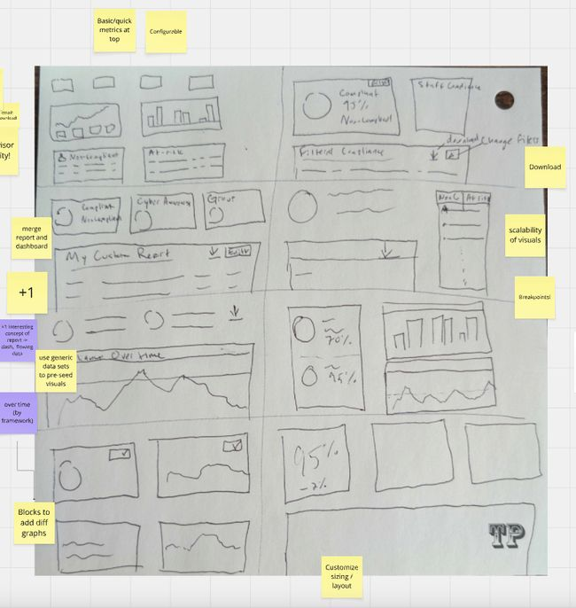
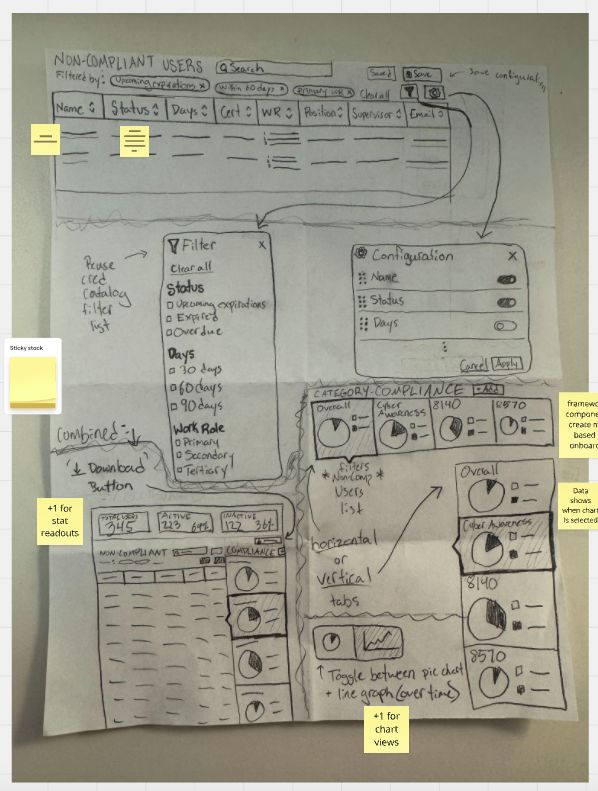
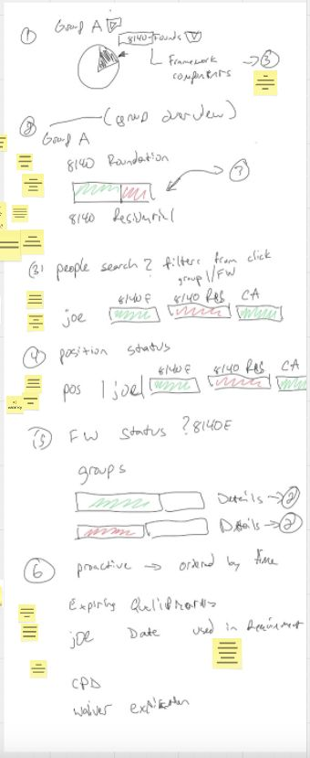
I built three low-fidelity directions in Figma and took them back to real users — deliberately unfinished, so people would react honestly instead of politely.
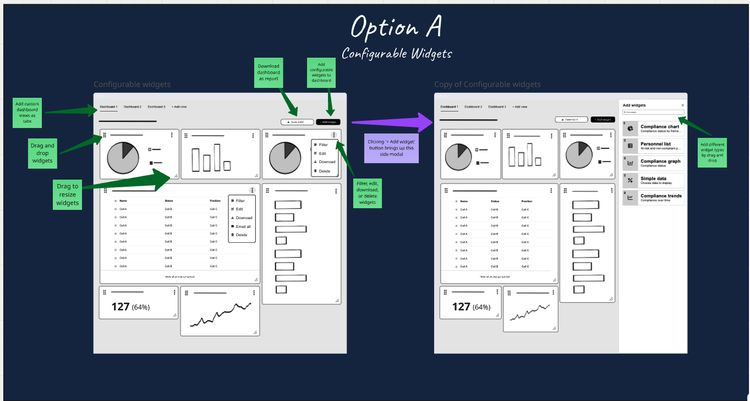
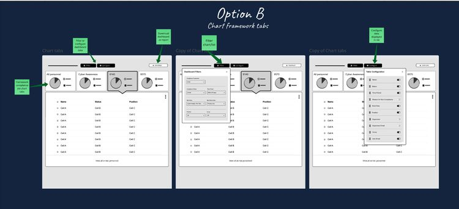
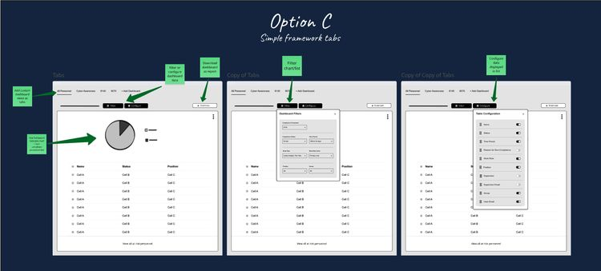
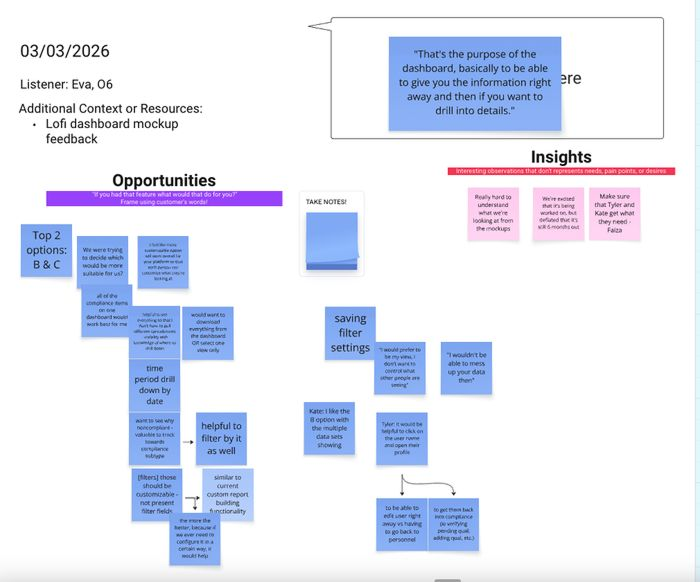
That's the purpose of the dashboard — to give you the information right away, and then if you want to, drill into details.DTRA, 03/03/26
I would prefer it to be my view. I don't want to control what other people are seeing.ON FILTER SCOPE — WHY SAVED VIEWS BECAME PER-USER
It would be helpful to click on the user name and open their profile, to edit the user right away rather than going back to personnel.A HIGH-VALUE INTERACTION THAT APPEARED IN NONE OF THE THREE MOCKUPS
Two of three customer groups preferred Option A for long-term flexibility; all groups agreed Option B's framework tabs handled drill-down best. The final direction is a synthesis: Option A's configurable architecture with Option B's framework tabs as one of the available views.
The third quote is the one I'd point to in an interview. Clicking a name to open a profile and fix the problem immediately wasn't in any of the three concepts. It only surfaced because users had something concrete to react to, and it went straight into scope.
The first iteration answered everything research had surfaced: framework tabs, drill-down to individuals, per-user filtering and column configuration, supervisor contact inline. It tested well on layout and navigation.
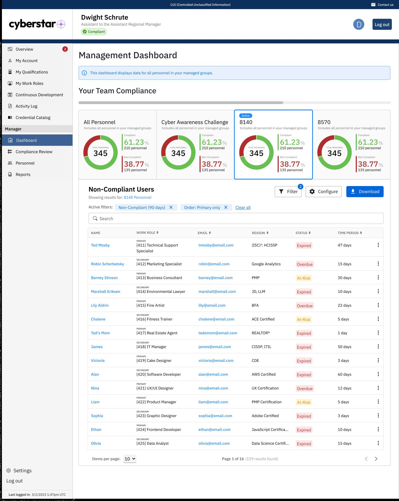
Then testing surfaced something no amount of layout refinement would fix: the binary Compliant / Non-Compliant model didn't match how compliance managers think about their workforce.
THE HIGHEST-LEVERAGE CHANGE IN THE PROJECT — AND IT CAME FROM RESEARCH, NOT CRITIQUEA person can be compliant right now and still have outstanding work. They might be awaiting a qualification matrix, operating under an active waiver, or still inside their qualification window. That person is fundamentally different from someone fully qualified with nothing left to do, and managers need to know which of their people require follow-up. The binary model hid exactly that distinction.
Real personnel also hold multiple work roles, each carrying requirements from different sources. A manager looking at Ted Mosby doesn't just need to know he's unqualified — they need to know which of his three roles is failing, which qualification is driving it, and whether the other roles are fine. The flat record couldn't express that, so it pushed managers back out to other screens to reconstruct the picture manually.
Unqualified — requirements are unmet. Compliant — meets requirements today, but work remains. Fully Qualified — everything met, nothing outstanding. Plus Combined, a rollup of Compliant and Fully Qualified.
That fourth number solves a reporting problem specific to this user. Compliance leads report upward to agency CIOs who want one figure. The three tiers give managers the operational detail they need; Combined preserves the clean headline they need to report — both audiences served without compromise.
Requirements are unmet. Equivalent to the previous non-compliant state.
Meets requirements today, but work remains — awaiting a qual matrix, under an active waiver, or inside the qualification window.
All requirements met, nothing outstanding.
Combined = Compliant + Fully Qualified — the single headline figure for reporting upward to agency CIOs.
The three tiers are expressed through five statuses in the Requirements column and the filter key. Each was specified with its tooltip copy, pill treatment, selected and unselected states, and full color ramp, so the same component reads identically in the profile, reports, and compliance review.
The qualification deadline has been missed. This person or requirement is outside any active extension, waiver, or exemption.
FOLLOW-UP REQUIREDUnder instruction and within the qualification window — either the 9-month foundational or 12-month residential timeline under DoD 8140.
NO ACTION YET · COUNTS AS COMPLIANTAn approved waiver is covering this requirement. Check the expiry date and plan ahead if renewal will be needed.
NO ACTION WHILE VALID · COUNTS AS COMPLIANTNo qualification matrix has been published for this work role yet. This person is considered compliant in the meantime — the gap is at the program level, not a failure by the individual.
NO ACTION · COUNTS AS COMPLIANTAll requirements for this work role have been met.
NO ACTION NEEDEDThe status system was specified at token level: tooltip copy, pill treatment, selected and unselected states, and hex values for every ramp. Two of the five statuses carry a footnote about rolling into the Compliant band, so the same component can be reused across the profile, reports, and compliance review without the copy going stale.
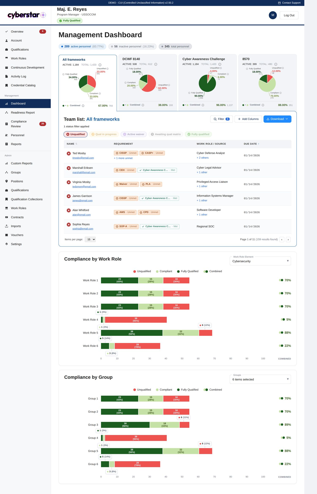
Three components carry the taxonomy shift. Each opens on the final version; switch the tab to see what it replaced.
Iteration 1 used tabs, so comparing frameworks meant switching context. The final design shows All Frameworks, DCWF 8140, Cyber Awareness Challenge and 8570 simultaneously — answering the original HMW question directly. Each panel carries its own active and total counts, resolving the active/inactive gap flagged on the very first annotated screenshot.
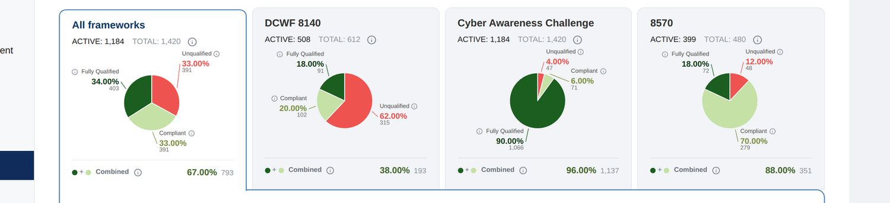
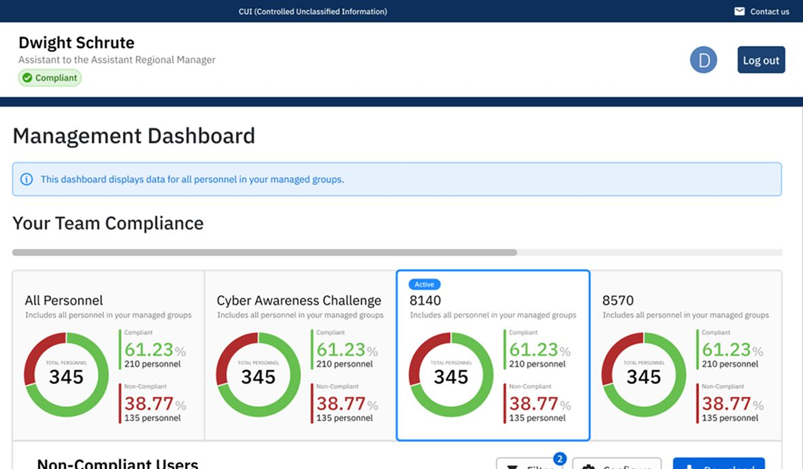
The table went from listing one reason for non-compliance to showing the actual requirements driving each person's status. Chips are marked Met or Unmet with a "+1 more unmet" affordance for overflow, work roles show "+2 others" where personnel hold multiple, and Due Date sorting supports acting before expiration rather than after.
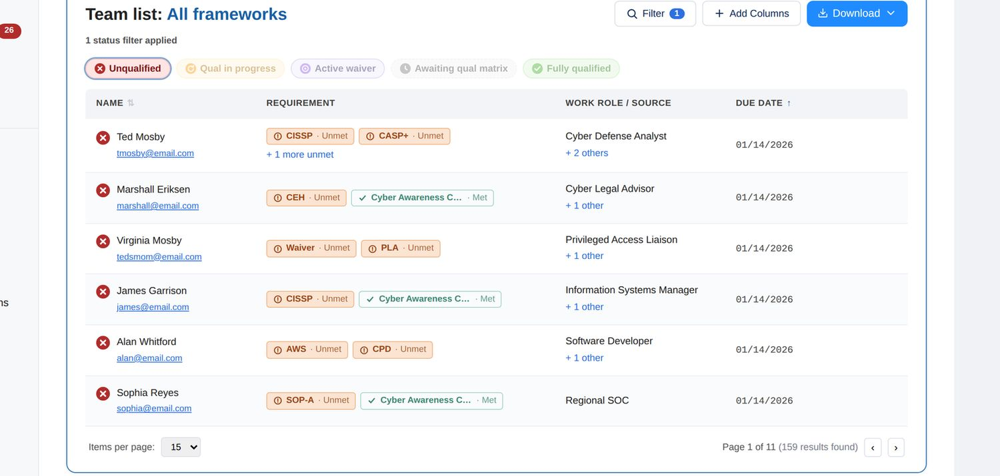
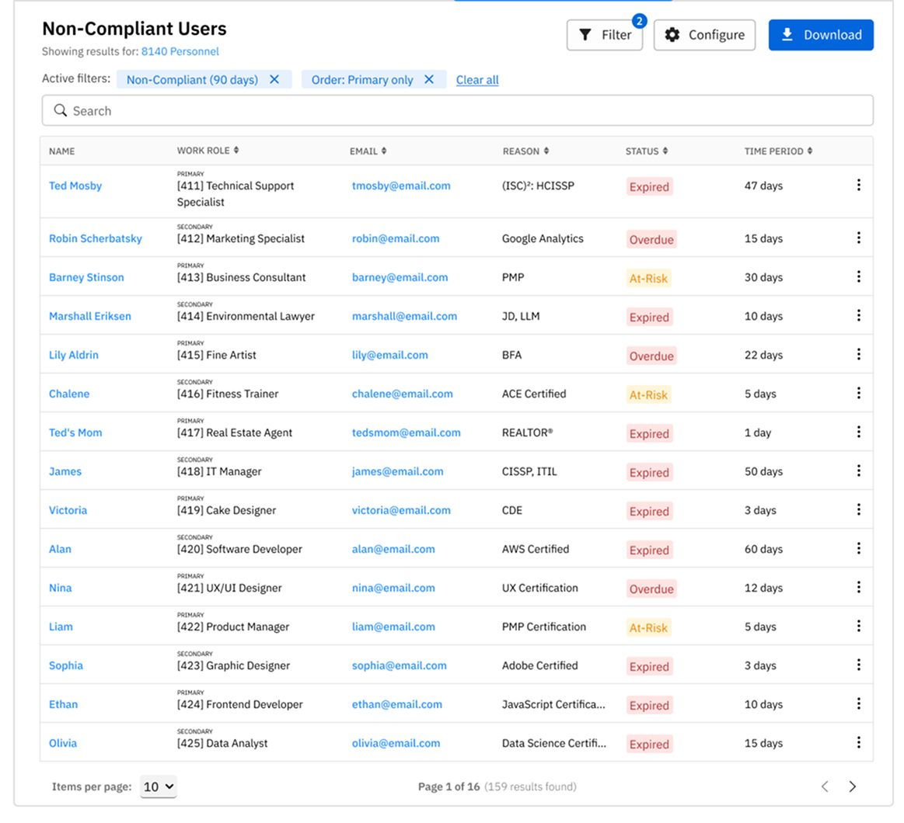
This changed more than any other single component. Work roles became first-class: each is its own card with its framework badge, whether it's primary or secondary, and its own status. Requirements are grouped by qualification type — Foundational, Residential-OJT, CPD — matching how DCWF actually categorizes them. Every line carries its own context: "Overdue since 01/14/2026," "in progress," "40 of 40 hours completed."
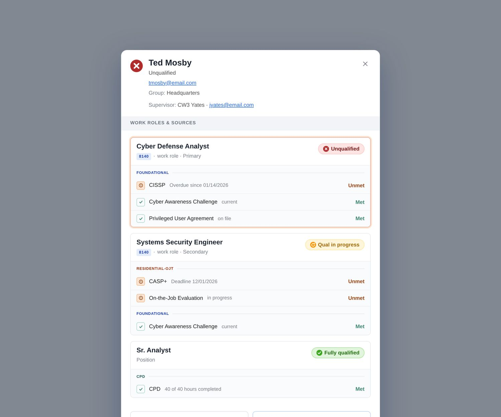
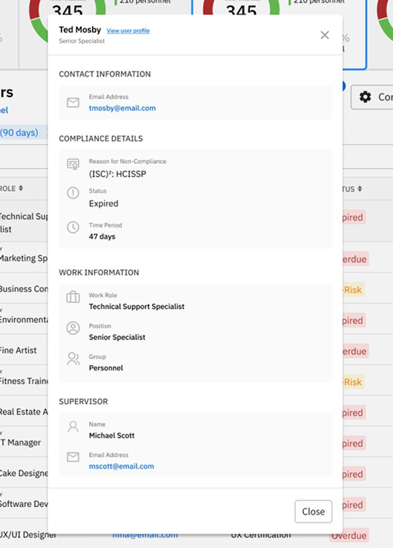
This is where the taxonomy becomes visible in the interface. A requirement's status rolls into its work role, and the work role's status rolls into the person. Ted Mosby is Unqualified because CISSP is overdue on his primary role, while his secondary role is progressing normally and his position requirements are fully met. Three different truths about one person, each readable on its own — exactly what the flat model destroyed.
The filter expanded to match the new model: status, expiring window, requirement scope across work role element, qualification type, role order and requirement type, then personnel details. It reuses the existing reports page filtering infrastructure rather than requiring new backend logic.
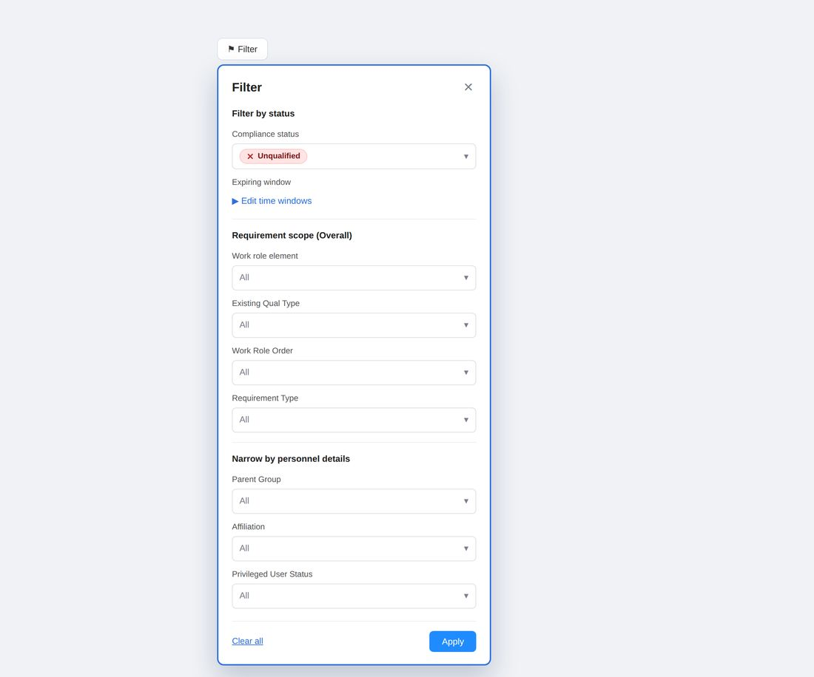
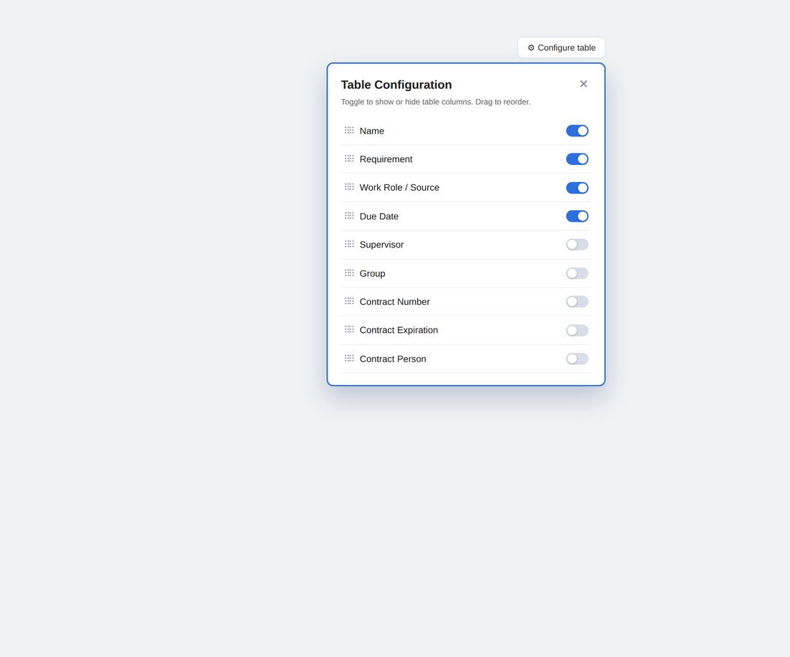
One visual language across every module. The framework panels, the work role chart and the group chart encode Unqualified, Compliant and Fully Qualified identically, and each surfaces a Combined rollup in the same position. A manager learns the system once and reads every chart fluently, which matters enormously in a tool used daily under time pressure.
The six-person constraint shaped this iteration as much as the first. The three-tier taxonomy was designed in direct conversation with engineering to confirm the underlying qualification data could support the distinction without a costly data model migration. Establishing feasibility early prevented a redesign that looked good but couldn't ship.
Section 508 compliance was non-negotiable inside the DoD ecosystem: sufficient contrast, keyboard navigation, and screen-reader-compatible component structure. Download sits on the team list, eliminating the spreadsheet workaround that had been the default workflow for years.
The design is in development. The most consistent theme in testing was relief — managers felt it finally matched how they think about the work, moving from "what's the number?" to "who do I need to talk to, and what do they need to do?"
Structured facilitation was a design multiplier. The workshop compressed weeks of back-and-forth into one session, surfaced the CEO's domain expertise, and produced more diverse ideas than I would have alone. The assumption prioritization matrix was new to me in this form, and mapping what we believed against what we could actually prove made round two far more focused.
The six-developer constraint was a genuine forcing function. Rather than designing the ideal product and hoping it got built, every feature decision was weighed against implementation cost from day one. That discipline produced a leaner design that is more likely to ship intact.
The two-round structure earned its keep. Several of the highest-value decisions — per-user rather than shared filter saves, clicking a name to open a profile — only emerged in round two, when users had something concrete in front of them. Building that loop in before high-fidelity work de-risked the whole project.
Good enterprise UX is ultimately about reducing cognitive load in high-stakes environments. Compliance managers don't have time to puzzle out a dashboard. They need to get in, find the problem, and act.